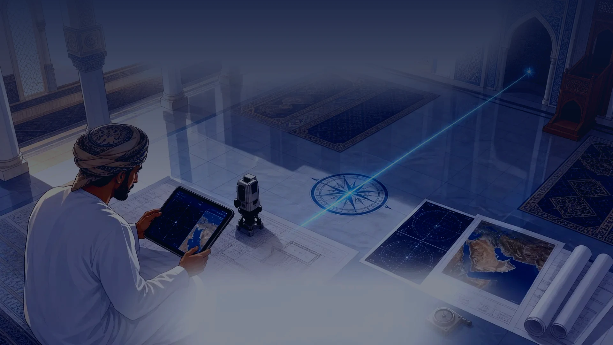
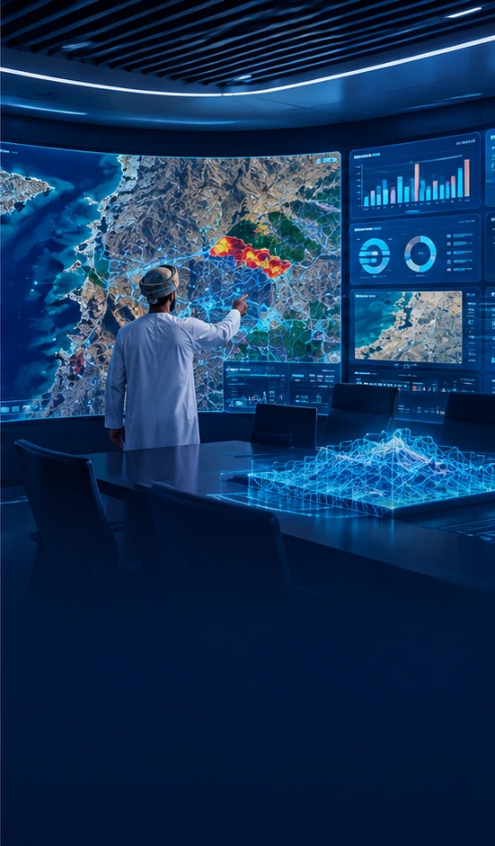
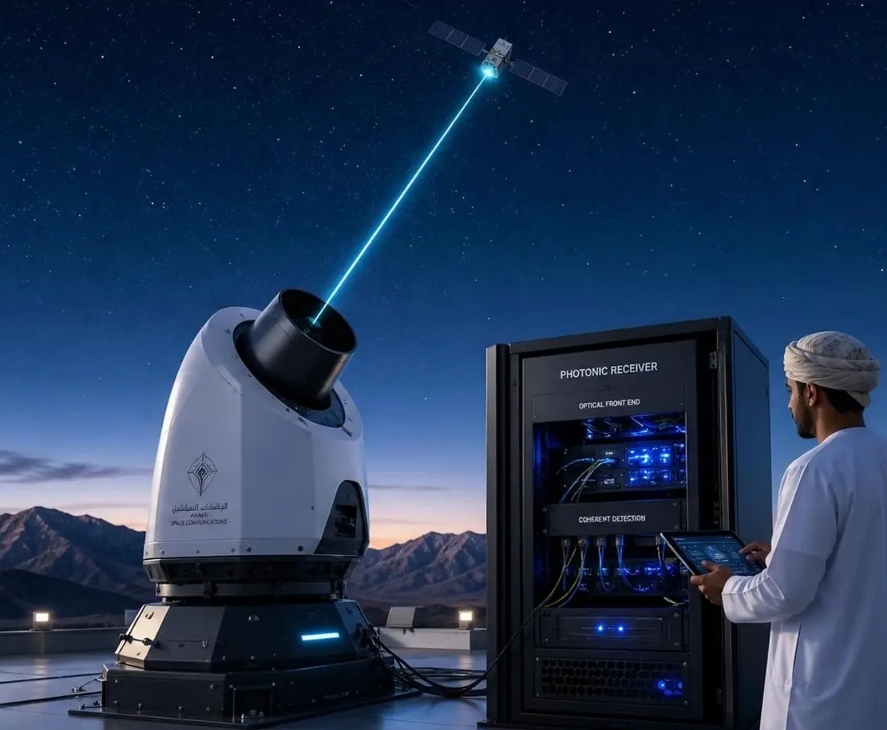

من البيانات الخام إلى قرار مدروس — حلول فضائية ورقمية عالية الدقة.

نحدد اتجاه القبلة للجوامع والمساجد والمصليات باستخدام الحسابات الفلكية وبيانات الأقمار الصناعية، ونسلّم تقريراً موثّقاً يوضّح زاوية المحراب على مخطط الموقع.

بناء منصات محتوى تفاعلية ومسوح رقمية قابلة للتوسع لجمع وتحليل البيانات الميدانية.
بحوث ميدانية وتحليلات سلوكية لرفع كفاءة ورضا المستخدمين عبر تحسين الواجهات والعمليات.
حلول متكاملة للمراصد بعروض تشغيل وصيانة وتعليم فلكي موجه للمؤسسات التعليمية والحكومية.

تركيب محطات للاتصال البصري بالأقمار الصناعية مع برامج صيانة دورية وضمان أداء.
تخطيط وتنفيذ مشاريع فضائية مع شركائنا الدوليين لتوفير خدمات كاملة من التصميم إلى الإطلاق والتشغيل.
تحويل البيانات المتراكمة وصور الأقمار والمحطات والمستشعرات إلى معلومات ثرية تمكّن القيادة من اتخاذ القرارات المناسبة.
تقييم مخاطر وتأمين بنى تحتية رقمية مع حلول كشف التسلل والتشفير والتدريب على الوعي الأمني.
برامج تجمع بين التأطير النظري والتطبيق العملي، تقدمها نخبة من الخبراء الأكاديميين والمهنيين.
تعلم الآلة والتعلم العميق وتطبيقاتها في تحليل الصور الفضائية.
أساسيات الرصد الفلكي والتلسكوبات وتحليل البيانات الفلكية.
أنظمة الأقمار الصناعية والاستشعار عن بُعد وإدارة المهام الفضائية.
تصميم وتنفيذ المشاريع التقنية وإدارة المخاطر والجودة.
نقدّم كذلك برامج مصمّمة خصيصاً لاحتياجات المؤسسات. اطلب عرضاً تدريبياً
إنشاء منشأة متخصصة داخل مجمع عُمان للابتكار (IPM) لتكون مقراً لتطوير التقنيات وتقديم خدمات «تحويل البيانات إلى رؤى»، وتضم مختبراً للذكاء الاصطناعي ومعالجة الصور وغرفة للتحكم بالمهام وورشة نماذج أولية.
برنامج تدريبي تقني يجمع بين الجانبين النظري والعملي، موجّه للمختصين والباحثين في مجال الصور الفضائية والجيومكانية، ويختتم بمشروع تطبيقي متكامل.